Baden-Baden1 est une ville moyenne allemande de plus de 50 000 habitants au cœur de la Forêt-Noire. Située dans le Land de Bade-Wurtemberg, à proximité de la frontière française, la cité badoise est mondialement connue pour son casino et comme centre de villégiature des plus grosses fortunes allemandes.
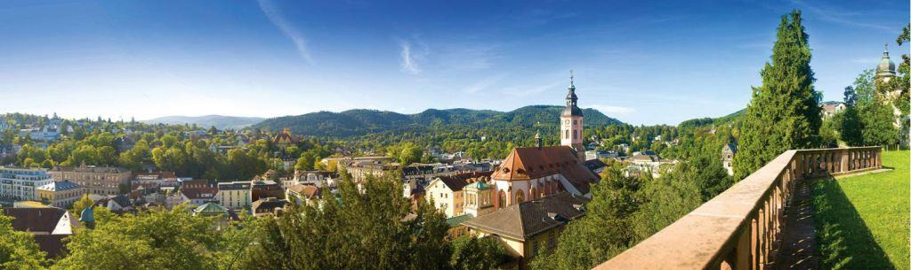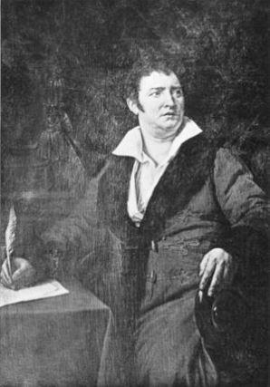En outre plusieurs festivals internationaux, la remise du Prix allemand des médias2 (Lauréat 1996 Boris Eltsine) et les courses hippiques pour le Grand Prix d’Allemagne d’Iffezheim3, font que Baden-Baden s’est acquiert une notoriété internationale ayant dépassée depuis plus de 340 ans les frontières de l’Allemagne.
Bien que la ville s’est acquise une réputation de ville thermale, datant de l’époque romaine, c’est à la fin du XVIIIe siècle que la ville devint une station thermale renommée dans toute l'Europe. Les thermes Friedrich, inaugurés en 1877, restent d’ailleurs l'un des plus beaux établissements thermaux de style néo-Renaissance au monde.
L’essor de la ville date du XIXe siècle avec le lancement du casino et de l’hippodrome conçus par le français Jacques Bénazet ; depuis les joueurs du monde entier et les adeptes de courses hippiques se sont donnés rendez-vous à Baden-Baden.
Le célèbre compositeur Hector Berlioz voyageant en Allemagne de 1856 à 1863, s’installe à Baden-Baden ou son activité musicale s’y limitait presque exclusivement. En 1862, à l’occasion de l'inauguration du nouvel opéra de théâtre il fait jouait en première Béatrice et Bénédicte.
Baden-Baden est également connue par beaucoup de Français pour avoir été à compter de 1945 le siège du commandement en chef des Forces françaises en Allemagne. Avec la construction d'une véritable ville française dans les quartiers ouest de la ville, dans laquelle vivaient environ 5 000 Français disposant de nombreuses infrastructures : supermarchés, écoles et lycée français, église catholique ; la présence française imprégnera durant plus de 50 ans le quotidien de la ville et de ses citoyens.... Plusieurs générations de Français auront vécu et contracté un mariage. Cette présence a pris fin en 19994.
NAISSANCE D’UNE TSARINE
Mais le thème de cette chronique touche à l’histoire et l’importance qu’a revêtue, et revêt aujourd’hui encore dans le sud de l’Allemagne, la présence d’une importante communauté russe.
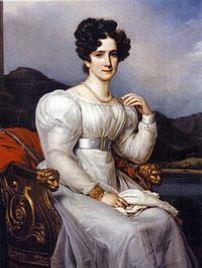L’histoire russe de la ville de Baden-Baden puise sa source à l’époque où la tsarine Catherine II la Grande voulu étendre et renforcer ses liens avec les maisons nobles d'Europe occidentale. Elle se met donc en quête d'une future épouse pour son petit-fils le Grand-Duc Alexandre5.
La recherche d’une épouse d'origine appropriée pour son successeur potentiel au trône, la pousse d’abord à rechercher des prétendantes issues de la noblesse allemande. Née elle-même princesse allemande, son dévolue tombe sur deux princesses badoises : Louise et Frédérique de Bade.
Alexandre et ÉlisabethÀ l'invitation de l'impératrice Louise fait donc avec sa sœur Frédérique un voyage à Saint-Pétersbourg. Le Grand-Duc Alexandre tombe sous le charme de la belle Louise6 et l’épouse en 1793, avec l’accord de la Tsarine Catherine. Louise adopte dès lors les coutumes, la foi orthodoxe russe et prend le nom d’Élisabeth Alexeïevna7.
En 1796, Catherine la Grande décède avant d'avoir pu changer l'ordre de succession au trône en faveur d’Alexandre. Bien qu'il ait été avisé de la décision de l'impératrice Catherine II, il reconnait son père Paul 1er comme successeur de l’impératrice. Mais en 1801, l'empereur Paul 1er succombe à un assassinat et Alexandre lui succède le 23 mars de la même année en devenant empereur sous le nom d’Alexandre 1er de Russie.
Durant les guerres de Libération contre l’empereur Napoléon 1er, le tsar déménage le 28 novembre 1813 à la cour de ses beaux-parents à Karlsruhe, pour être au plus près de ses troupes. En effet les États allemands soumis par Napoléon, devant ses premières défaites, se retournent contre lui l'un après l'autre et se joignent à la Sixième Coalition autour de la Russie.
La campagne d'Allemagne, dont la campagne de Saxe est la partie centrale, est la suite de la campagne de Russie de 1812. Elle se déroule au cours de l'année 1813 et constitue le véritable tournant de la guerre liée à la Sixième Coalition. Après la victoire sur Napoléon 1er, l’impératrice se rendra à Baden-Baden en 1814 entrainant sa suite et de facto d’autres membres de la famille impériale russe ainsi que de l’aristocratie.
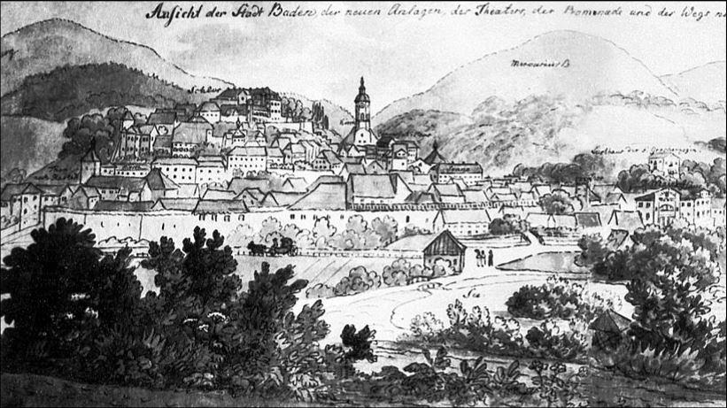
« Je suis ici, dans des endroits les plus beaux du monde »
Élisabeth Tsarine de Russie. 1814.
L’ÂGE D’OR
Malgré le décès de la tsarine Elisabeth en 1826, l’engouement pour Baden-Baden perdura pour l’élite russe et quelques années plus tard, cette paisible ville de province deviendra un véritable centre d’attraction pour la noblesse russe.
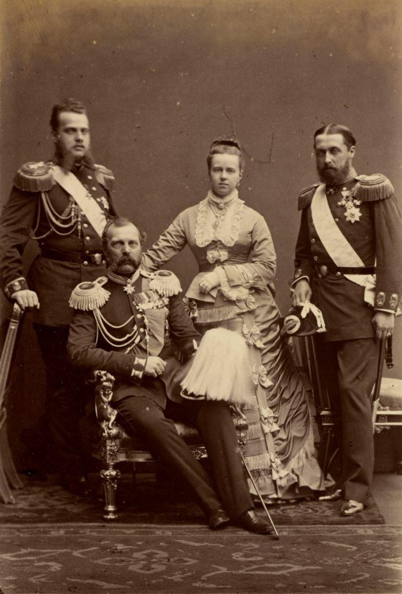Entraînés par le tsar Alexandre II, diplomates, nobles de hauts rangs et grandes fortunes bourgeoises passent l’été à Baden-Baden. Le plus grand groupe de visiteurs, hors la famille et la cour impériale, étant les représentants de la noblesse héréditaire extrêmement riche de Saint-Pétersbourg.
Parmi les perpétuels résidants à Baden-Baden figureront deux familles importantes que sont la famille du Prince Menschikov et la famille Princière Gagarine. Le prince Vladimir Menchikov était vraisemblablement le plus riche d'entre eux. Il avait édifié une belle villa, ou il s’était fait construire un petit hippodrome dans son immense jardin. Son amour pour les courses de chevaux l’amènera tout naturellement à devenir membre fondateur du Club international8 qui organisera les concours hippiques dès 1872.
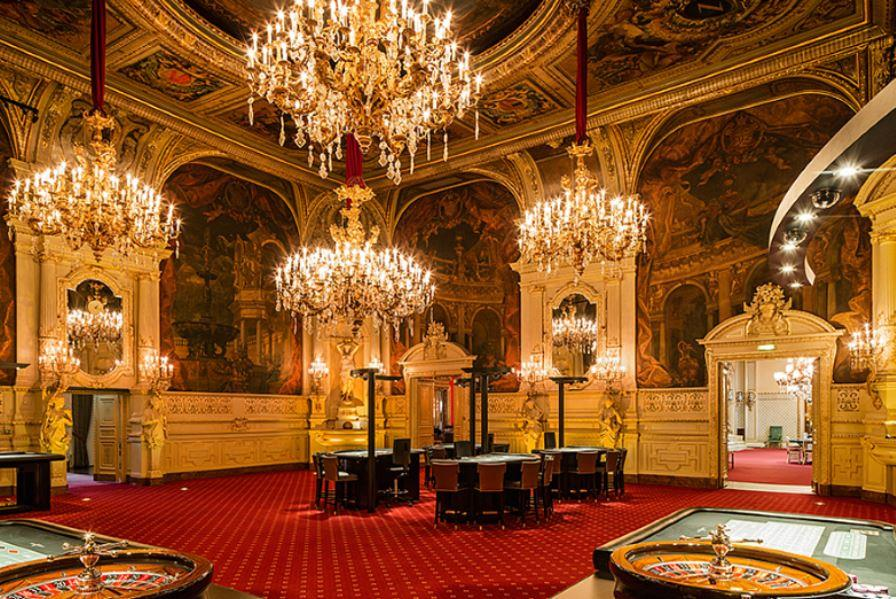 Casino de Baden-BadenComme les jeux de hasard étaient proscrits en Russie, les nobles et gentilhomme russes se ruèrent sur Baden-Baden. Même si pour atteindre la cité badoise il fallait endurer un petit calvaire de plusieurs semaines de voyages. Mais Baden-Baden était la ville où l’on se devait d’être. Outre la roulette, la ville offrait de nombreux bals, des concerts et de nombreux restaurants tout était fait pour agrémenter le séjour de la riche communauté russe.
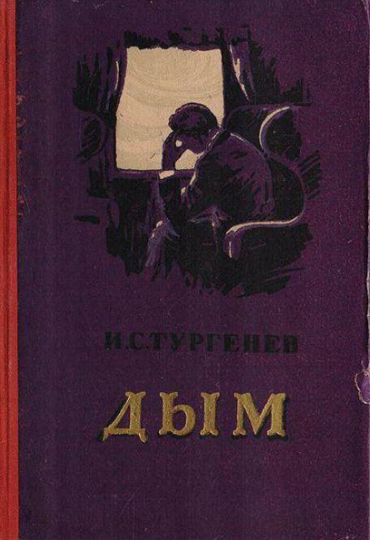Mais Baden-Baden ne serait pas ce qu’elle est sans la présence des plus grandes figures de la littérature russe. Comme beaucoup de lettrés, Tourgueniev avait une excellente maîtrise de l'allemand et du français et pour suivre son grand amour, la très célèbre cantatrice française Pauline Viadot, Ivan S. Tourgueniev s’était installé à Baden-Baden à compter de 1863. Rapidement sa villa devint le centre culturel de la ville et un merveilleux observatoire pour son roman « Fumée ». À la parution du roman, satire mordante de la bourgeoisie russe, celui-ci provoqua en Russie l'indignation du public et d'une bonne partie de la critique mais devint un monument littéraire.
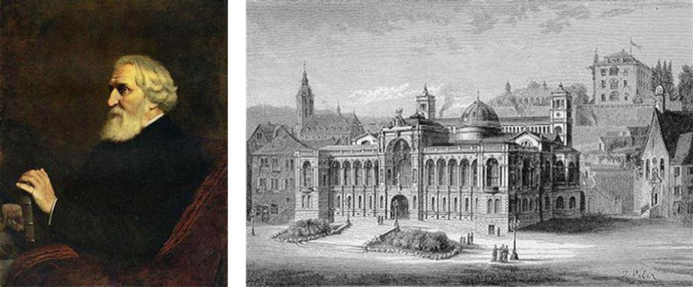
Tourgueniev et à droite Baden-Baden du temps de Tourgueniev
Fiodor Dostoïevski est également un habitué de la ville d’eau et résidera deux fois à Baden-Baden, en 1863 et en l'année 1867. Entre les visites, il écrira son roman « Le joueur ».
« J’ai tout perdu, tout ! Tout ! Ô mon ange, ne sois pas triste, ne t’inquiète pas ! Sois certaine que maintenant il va enfin venir le temps où je serai digne de toi et ne te dépouillerai plus comme un infâme et ignoble voleur ! Maintenant mon roman, seul mon roman peut nous sauver, et si tu savais à quel point j’espère en lui ! » Lettre datant du 18 novembre 1867 où il annonce à sa femme Anna Grigorievna la perte des 166 pièces d’or qu’il leur restait.
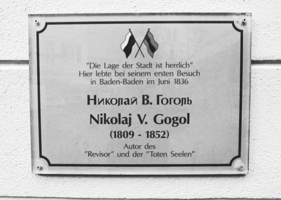Ivan A. Gontcharov9 est également venu à cause du casino de Baden-Baden et avait, comme Dostoïevski, de grosses pertes d’argent.
« Il me semble que ce jeu a été inventé pour les Russes » Dostojewki
Personne d'autre que Tolstoï a rompu un voyage pour tenter sa chance à la roulette à Baden-Baden. Il notera : « Roulette jusqu’à six heures du soir. J’ai tout perdu. » Ce sera Tourgueniev qui le sauvera de la banqueroute en lui prêtant de l’argent.
Gogol quant à lui a plusieurs fois résidé à Baden Baden pour se soigner et maintenir le contact avec August Lewald le fondateur de la revue culturelle « Europa » qui avait publié sa nouvelle traduite en allemand « Taras Bulba ».
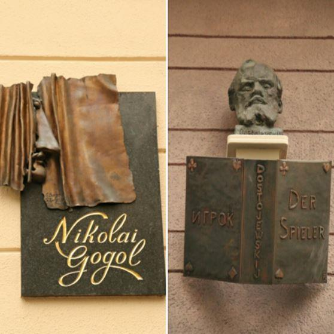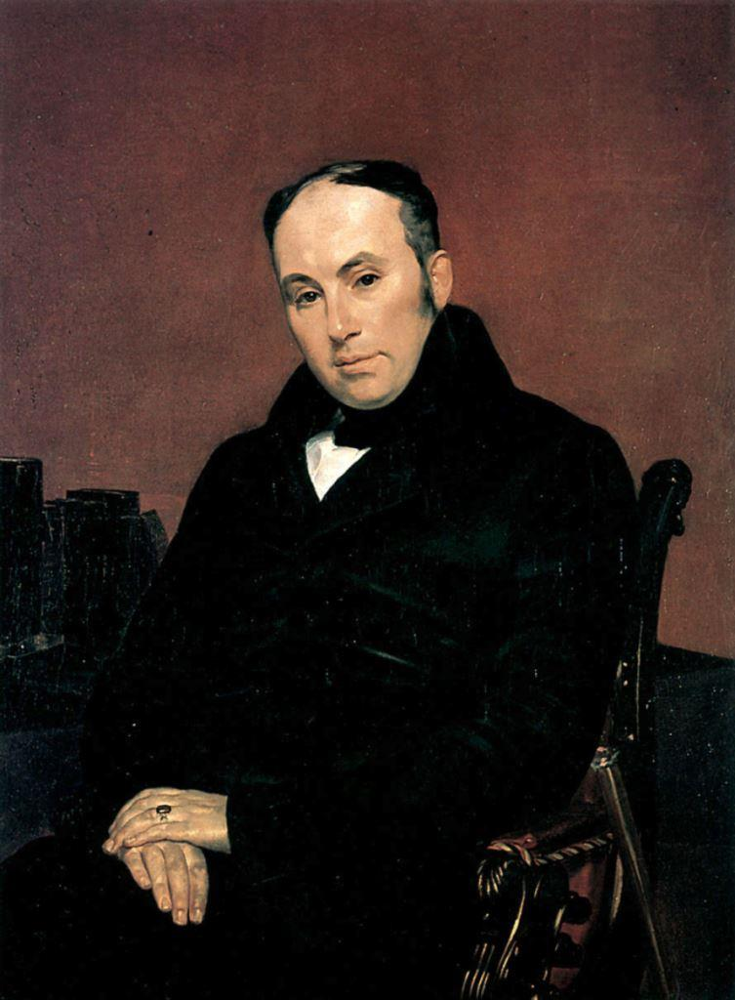 Vassili Andreïevitch JoukovskiEnfin, Vassili Andreïevitch Joukovski le grand poète, critique et académicien russe, précurseur du romantisme russe a passé les dernières années de sa vie à Baden-Baden où il mourut. Il a décrit la ville comme un « coin de paradis ». Ils ont ainsi tous immortalisé Baden-Baden dans leurs œuvres. Qui connait la littérature russe connait Baden-Baden !
Malgré le démon du jeu, la colonie aristocratique russe de Baden-Baden était très pieuse et suivait les offices religieux dans des maisons privées. Il y avait bien des églises pour les services orthodoxes à Stuttgart et à Karlsruhe mais trop éloigné et on décida en 1855 de réunir des fonds pour la construction d'une église.
La princesse de Bade, née duchesse Marie Maximilianovna de Leuchtenberg10, prit la tête du comité en 1880. Motivant les administrations thermales et municipales de Baden Baden à faire construire l'église russe. Cette dernière administration soutint projet en faisant don d’un terrain.
L'architecte pétersbourgeois Ivan Strom, professeur à l'Académie des Arts de Saint-Pétersbourg, fut à l'origine du projet. La première pierre fut bénite, avec de la terre de Russie, et l'église inspiré des églises orthodoxes de Russie septentrionale consacrée le 28 octobre 1882. La mosaïque au-dessus de l'entrée sera l'œuvre du prince Grigor Gagarine. Elle portera le nom de la Transfiguration-du-Seigneur11.
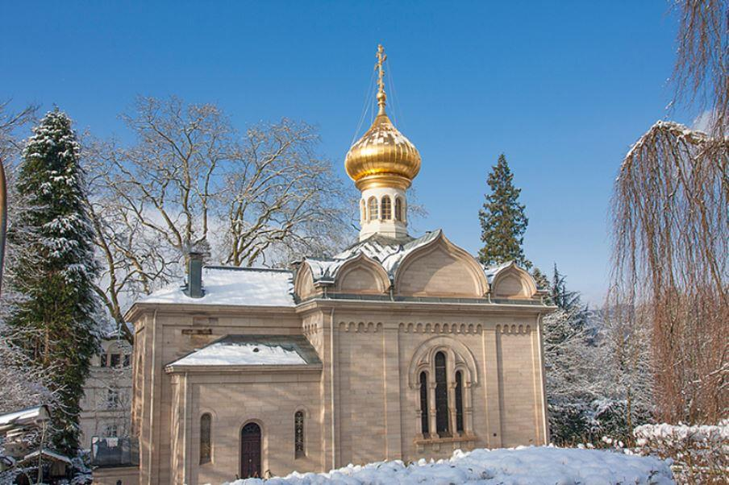
LA FIN ET RENOUVEAU DE LA PRÉSENCE RUSSE
Durant la première et seconde guerre Mondiale Baden-Baden n’est pas exempte de connaître des difficultés liées aux vicissitudes de la guerre et aux problèmes d’approvisionnement. Mais petit à petit la ville reprend le dessus. Les années 1950, avec la naissance de la nouvelle RFA, seront marquées par une césure nette due à la guerre froide et surtout le rideau de fer qui s’abattit sur une partie de l’Europe. La grande période russe semble révolue pour longtemps.
La présence russe à Baden-Baden se limitera à quelques rares émigrés russes, derniers témoins vivants d’une communauté disparue, et seule la présence de la Mission Militaire Soviétique de Liaison, détaché auprès du commandement des Forces françaises en Allemagne, témoignera d’une présence russe plus que discrète.
Néanmoins Baden-Baden restera pour les russes une des villes allemandes les plus célèbres après Berlin ! En effet, durant l'ère soviétique, les classiques russes étaient incontournables à l'école et faisaient partie des lectures obligatoires des élèves russes et « fumée » de Tourgueniev en faisait partie.
Après la chute du système soviétique en 1991 une nouvelle page se tourne dans les relations germano russes et Baden-Baden accueillera dans les années qui suivirent plusieurs centaines de familles provenant des anciennes républiques soviétiques (ou d’autres pays du bloc de l’Est) dans le cadre du rapatriement de russe allemand de souche.
Ce sont ces migrants russes de souche allemande qui écriront une nouvelle page de l’histoire russe de Baden-Baden. Ces « Allemands-Russes » investiront dès lors certains logements laissés libres par les français. Si l’on parlait français dans les « cités » aujourd’hui l’on parle russe.
La fin de la guerre froide permettant l’assouplissement des procédures des visas, et le développement de l’économie de marché ; la libéralisation de l’économie en Russie permet de pénétrer de nouveaux marchés qui étaient encore fermés il y a quelques années.
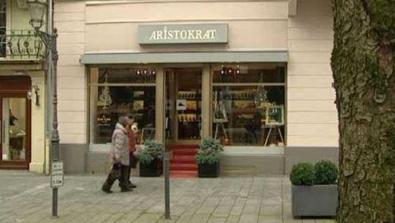Les conséquences sont immédiates, Nombreux seront les entrepreneurs russes qui profitent des opportunités offertes par le nouveau mode de vie qui permettent de s’enrichir rapidement. Cet enrichissement voit au fil des années émerger une nouvelle société et naître une nouvelle élite incommensurablement riche et influente : les oligarques.
Pour Baden-Baden les têtes couronnées, font places dorénavant aux politiciens enrichies et aux gens d'affaires russes qui comme leurs ancêtres seront attirés par le côté somptueux de la ville en renouant les liens séculaires des tsars avec Baden Baden. C’est un nouvel essor de la présence russe à Baden Baden.
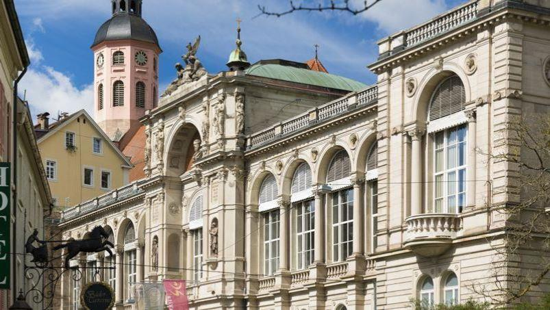Désireux de sécuriser leur argent vite gagné, ces nouveaux riches font l’acquisition de nombreux biens immobiliers à Baden-Baden et nombre les villas Belle Époque deviennent de luxueuses demeurent pour cette nouvelle élite économique. La fille d’Eltsine, Tatjana, ainsi que la sœur de Chevardnadze deviennent propriétaire à Baden Baden. Mais, en règle générale, les noms des acheteurs restent secrets.
Restaurants avec menus écrits en cyrillique, organisation de festivals, services de conciergerie, de gardiennage, de chauffeurs de maître, agences spécialisées dans l'événementiel, concessionnaires de voitures premium, baby-sitters, coach personnel, épiceries fines… Baden Baden s'est mise au diapason de cette nouvelle riche clientèle.
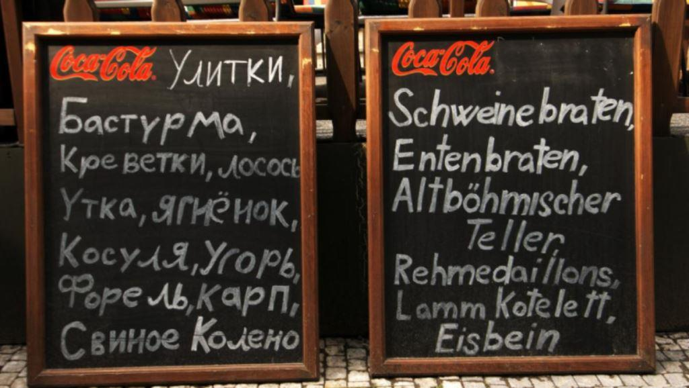Fait marquant, la langue russe est, depuis quelques années, omniprésente à Baden. Beaucoup d’employés, fils et filles de ces « allemands russes » aux noms et prénoms à consonance russe se sont intégrés et font maintenant partie de la population badoise. Ce qui permet à Baden Baden d’avoir un impressionnant vivier de russophone et par conséquent de ne pas avoir de souci de traduction et d’interprétariat pour les touristes russes.
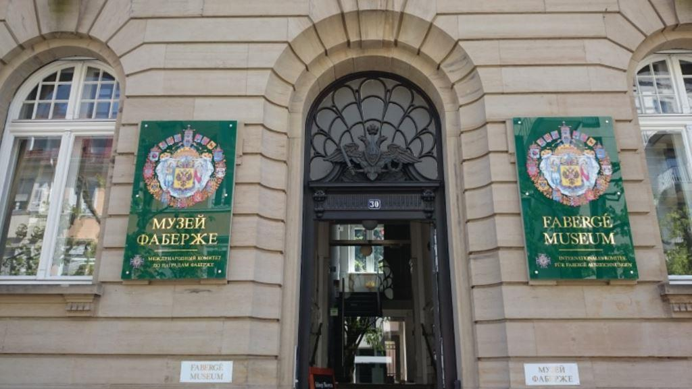L’attrait des russes pour la ville se justifie aisément par le facteur linguistique et du fait de pouvoir faire du shopping et de flâner, sans gardes du corps. Certains se lancent dans la recherche de traces de l'histoire russe dans la ville d'autres viennent pour profiter du calme et se laissent aller à une cure thermale apaisante. D’autres jouent certainement au casino ou participent aux programmes culturels qu’offrent la ville.
Les nouveaux riches russes contribuent depuis plusieurs années financièrement et culturellement au développement de la ville et le font connaitre. Beaucoup de villas splendides seraient aujourd’hui dans un état de délabrement sans les « Russes ».
En 2009, un oligarque collectionneur russe décide de partager une partie de sa collection Fabergé qui se trouvent à Moscou et St Pétersbourg avec le public. Sur les 3000 objets d'art, parmi lesquels des chefs-d'œuvre comme les légendaires Œufs Impériaux de nombreux trônent désormais à Baden-Baden et possède ainsi le premier Musée au Monde, consacré à la carrière du plus célèbre Joaillier-Bijoutier attitré du Tsar de Russie.
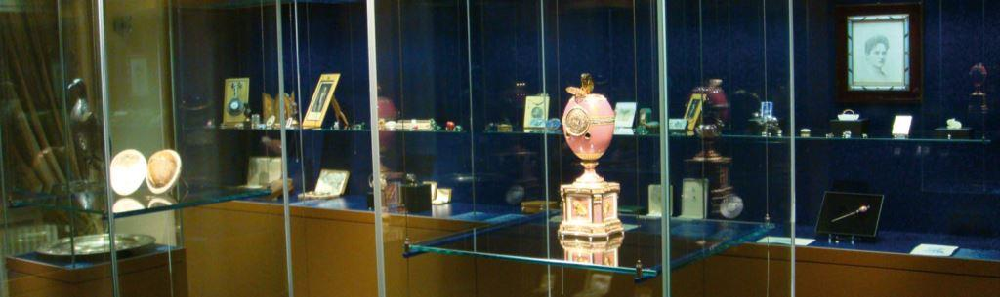Après le succès de l'Opéra Mariinsky en 2000 de nombreux artistes russes ou d’origine russe se produisent au nouveau palais des festivals de Baden-Baden (Festspielhaus Baden-Baden) la plus grande salle de concerts et d'opéra d'Allemagne, avec deux mille cinq cents places. Olga Borodina la célèbre mezzo-soprano, le pianiste de classe mondiale Evgeny Kissin, la « Grande Dame » de l'école de piano russe Elisabeth Leonskaya et Lilya Zilberstein ne sont que quelques noms de ces célèbres artistes russes.
Ainsi, Baden-Baden la « légendaire » attire encore un nombre élevé de touristes russes dans la ville thermale. Non seulement une destination de choix pour une riche clientèle bourgeoise elle attire également beaucoup de russe imprégné de littérature et de culture. L’engagement envers la communauté russe s’est également signalé par la signature de de contrats de jumelage avec les villes de Yalta en 2000 et de Sotchi en 2012.
A.W.
Notes :
1 « Baden-Baden est la seule ville russe en dehors de la Russie » In : Reportage télévisé du Südwestrundfunk le 22 Octobre 2003.
2 Prix indépendant pour les personnalités qui ont façonné la société ou la politique de manière décisive. Le président russe, Boris Eltsine, s’est rendu à Baden-Baden le 17 avril 1997 pour recevoir le «Prix des médias» 96, décerné par Media Control. La visite du président russe à Baden-Baden est liée à une réunion de travail avec le chancelier fédéral Helmut Kohl. La cérémonie de remise des prix a lieu au Club International de Baden-Baden.
3 Petite bourgade à quelques kilomètres seulement de Baden Baden. Le Grand Prix de Baden (Grosser Preis Von Baden) est une course hippique de galop qui se dispute au début de septembre. C'est une course de Groupe I, réservée aux pur-sang de 3 ans et plus, qui se court sur 2 400 mètres. Le Grand Prix de Baden sert parfois de course préparatoire pour des chevaux visant le Prix de l'Arc de Triomphe au mois d'octobre à Paris.
4 Le départ des Forces françaises stationnées en Allemagne (FFSA, ex-Forces françaises en Allemagne, FFA), en 1999, a conduit à la reconstruction ou à la rénovation complète de plusieurs quartiers qui abritaient auparavant les « cités cadre » abritant les familles de militaires et de civils français, ainsi que des équipements collectifs (écoles, collège et lycée, supermarchés) et de la caserne de l’armée de terre. Ces anciennes cités, qui portaient les noms de « Cité Bretagne », « Cité Normandie », « Cité Paris » et « Cité Thiérache », sont désormais usuellement désignées sous le nom collectif de « Stadtteil Cité ». L'ancienne « Cité Paradis », qui abritait les villas des officiers de haut rang ainsi que la Mission militaire soviétique de liaison auprès du commandement en chef des FFA, est désormais intégrée au quartier résidentiel environnant.
5 Alexandre Ier de Russie ou Alexandre Pavlovitch Romanov, né le 12 décembre 1777 (23 décembre 1777 dans le calendrier grégorien) à Saint-Pétersbourg et mort le 19 novembre 1825 (1er décembre 1825 dans le calendrier grégorien) à Taganrog, fils de Paul Ier et de Sophie-Dorothée de Wurtemberg.
6 Louise Augusta de Bade née le 24 janvier 1779 à Karlsruhe et morte le 16 mai 1826 à Beliov.
7 Les sœurs contractent également de brillantes unions : Caroline devient reine de Bavière, Frédérique, reine de Suède, Marie, duchesse de Brunswick, Wilhelmine, grande-duchesse de Hesse-Darmstadt.
8 L’hippodrome d’Iffezheim, situé à la frontière de la France, est l’un des plus hauts lieux de courses hippiques d’Allemagne. 3 fois par an, des réunions de grandes renommées rassemblent l’élite du galop international. Amateurs et passionnés se retrouvent pour y partager un moment unique dans une ambiance élégante et festive. Chaque année, jusqu’à 180 000 spectateurs font le déplacement pour s’adonner aux joies des paris et à la fièvre des courses de pur sangs en directe. Depuis 1858, des courses de chevaux se déroulent devant les portes de la Forêt-Noire à Iffezheim. L'opérateur de casino français Édouard Bénazet souhaitait offrir aux visiteurs de la ville thermale de Baden-Baden, à côté du théâtre et du spa, une autre attraction - les courses International Gallop Baden-Baden sont nées. En 1872, le Club International a été fondé, dont le but était et est de réaliser et de "soulever" des courses de pur-sang.
9 Gontcharov a eu des relations amicales tumultueuses avec Ivan Tourgueniev, avec lequel il se brouille à partir de 1857, l'accusant de plagiat. La presse prend généralement le parti de Tourgueniev et se moque de Gontcharov. Ils se réconcilieront partiellement vers 1863.
10 Petite-fille de l'empereur Nicolas 1er de Russie.
11 La crypte abrite le sarcophage de la princesse Guillaume de Bade, née duchesse Marie Maximilianovna de Leuchtenberg (1841-1914). La princesse Tatiana Gagarine est inhumée à proximité. La paroisse appartient à l'Église orthodoxe russe hors frontières qui a retrouvé l'unité canonique avec le Patriarcat de Moscou en 2007.
Partager cette page